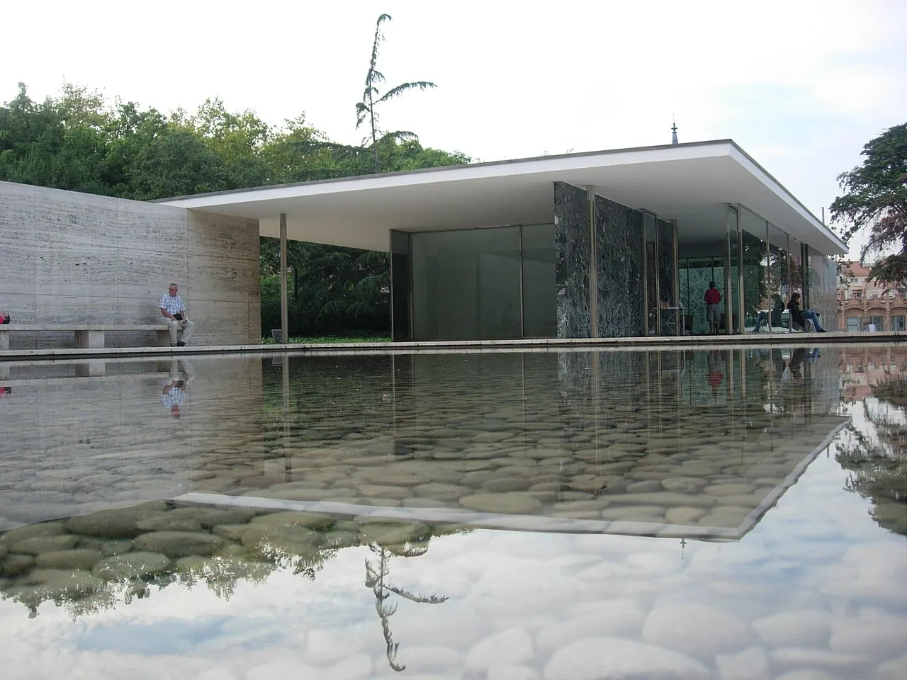
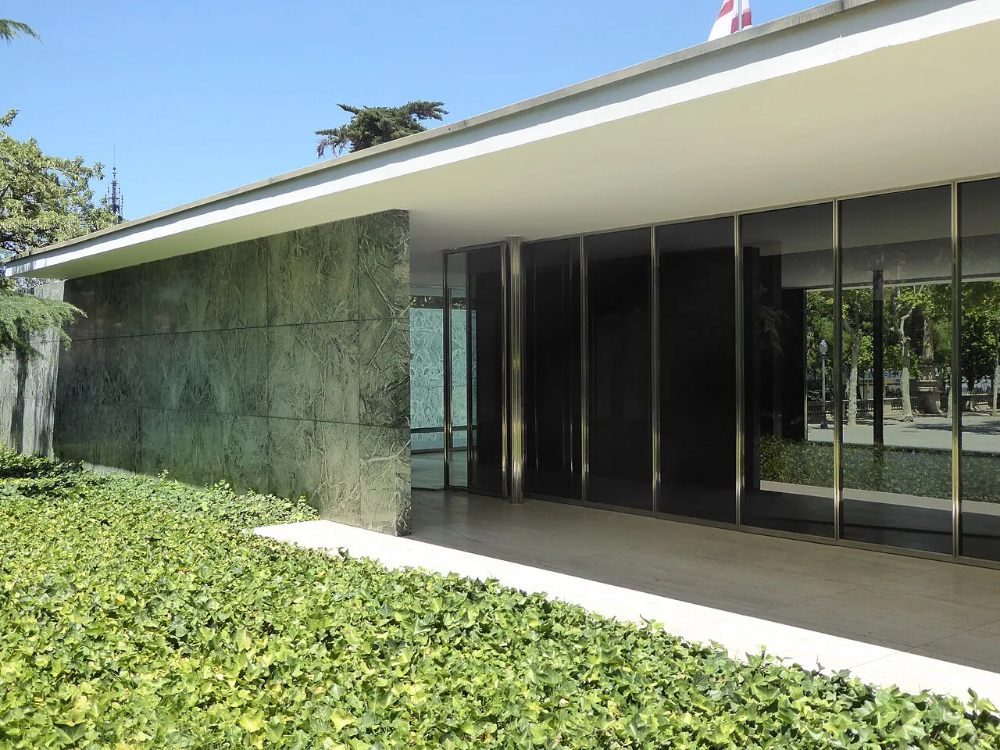
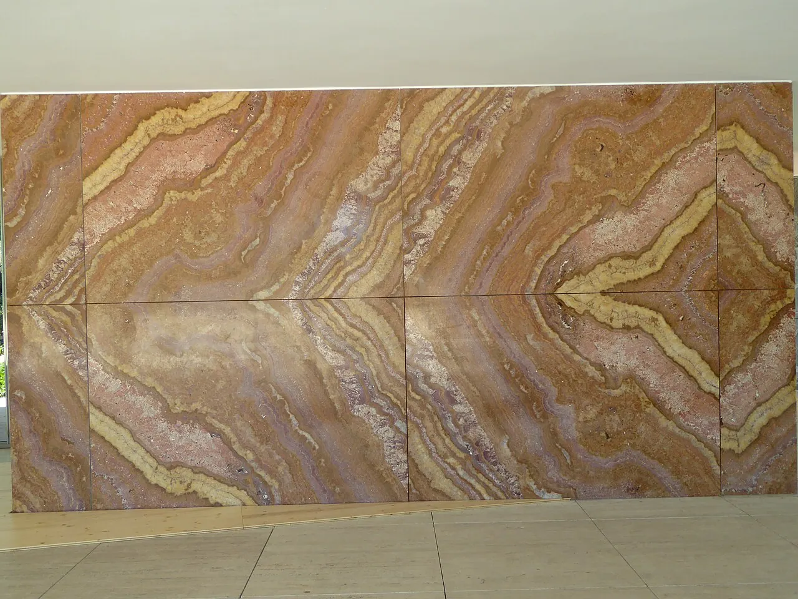
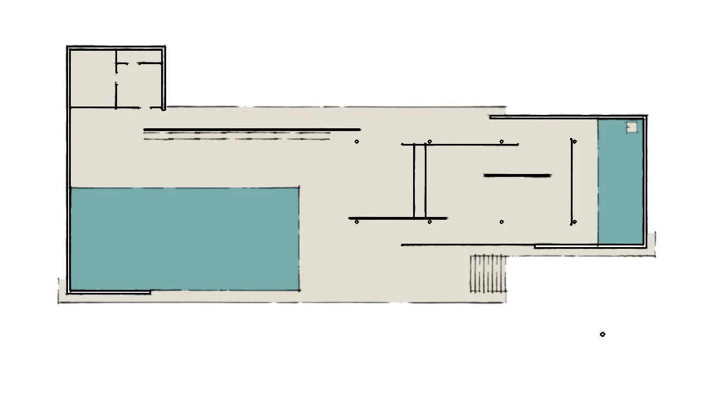

1/9 · Exterior · The Barcelona Pavilion, Barcelona, 14 October 2010Photo: Ashley Pomeroy at English Wikipedia · CC BY 3.0 · source

2/9 · Exterior · 1929 Barcelona Pavilion reconstruction by Mies van der RohePhoto: Russ McGinn · CC BY-SA 2.5 · source

3/9 · Exterior · Barcelona-Pavillon, Barcelona, Catalonia, July 2014Photo: Ardfern · CC BY-SA 3.0 · source4/9 · Exterior · The Barcelona Pavilion , designed by Ludwig Mies van der Rohe for the 1929 International ExhibitionPhoto: thierrytutin · CC BY 2.0 · source5/9 · Interior · Inside the reconstructed Barcelona Pavilion, originally designed by Ludwig Mies van der RohePhoto: Christian Gänshirt · CC BY-SA 4.0 · source6/9 · Interior · Barcelona-Pavillon, Barcelona, Catalonia, July 2014Photo: Ardfern · CC BY-SA 3.0 · source7/9 · Detail · Reflecting pool, Barcelona-Pavillon, Barcelona, Catalonia, July 2014Photo: Ardfern · CC BY-SA 3.0 · source

8/9 · Detail · Barcelona-Pavillon, Barcelona, Catalonia, July 2014Photo: Ardfern · CC BY-SA 3.0 · source

9/9 · Plan · Floor Plan Barcelona PavillonPhoto: TomAlt · CC BY-SA 3.0 · source
The Barcelona Pavilion (Catalan: Pavelló alemany; Spanish: Pabellón alemán; "German Pavilion") is a structure designed by Ludwig Mies van der Rohe and Lilly Reich. It was originally built as the German Pavilion for the 1929 International Exposition in Barcelona, Catalonia, Spain. This building was used for the official opening of the German section of the exhibition. It is an important building in the history of modern architecture, known for its simple form and its use of expensive materials, such as marble, red onyx, and travertine. The original structure was demolished in 1930, and it was reconstructed in 1986. Furnishings specifically designed for the building, including the Barcelona chair, are still in production, and the structure has inspired many important modernist buildings.
Mies's response to the proposal by Georg von Schnitzler was radical. After rejecting the original site for aesthetic reasons, Mies agreed to a quiet site at the narrow side of a wide, diagonal axis, where the pavilion would still offer viewpoints and a route leading to one of the exhibition's main attractions, the Poble Espanyol.